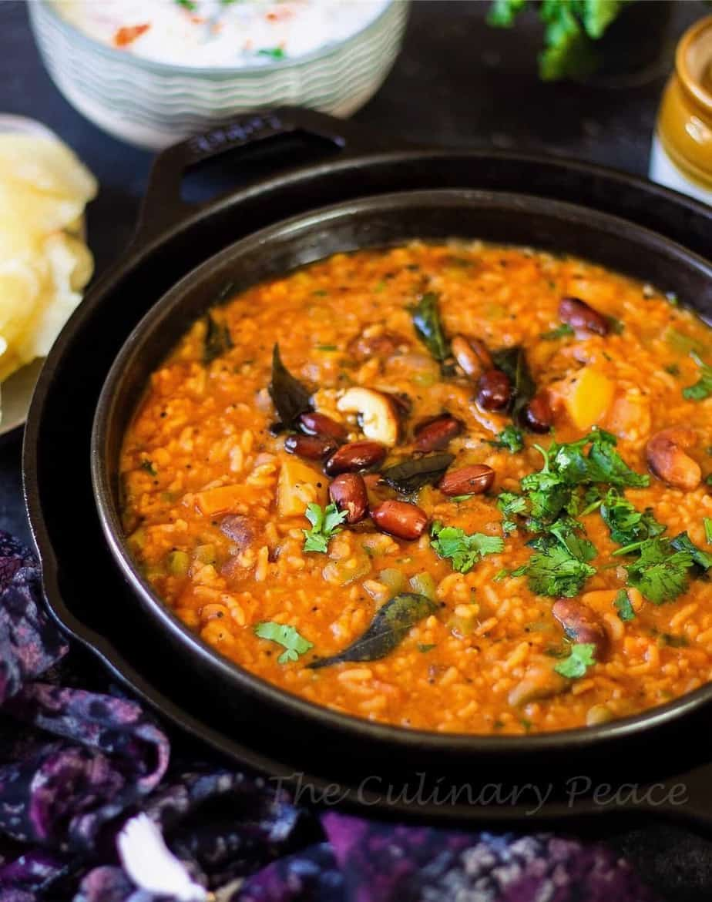

Bisi Bele Bath Bliss! 🍚🌶️

Ingredients for Bisi Bele Bath Bliss 🍛
1 Cup Rice 🍚
1/4 Cup Toor Dal (Pigeon Pea Lentils) 🌾
1 Onion (finely chopped) 🧅
1 Tomato (chopped) 🍅
1/2 Cup Mixed Vegetables (Carrots, Beans, Potatoes, etc.) 🥕🥔
1 tbsp Ginger-Garlic Paste 🧄
2 tbsp Bisi Bele Bath Powder (or Sambar Powder) 🌶️
1/2 tsp Turmeric Powder ✨
1 tbsp Tamarind Paste 🍋
2-3 Green Chilies (slit) 🌶️
1 tbsp Ghee (clarified butter) or Oil 🍯
1/2 tsp Mustard Seeds 🌰
1/2 tsp Cumin Seeds 🌱
1/4 tsp Hing (asafoetida) 🧂
Fresh Curry Leaves 🌿
Salt to taste 🧂
Fresh Cilantro for garnish 🌿
Steps 🍴
Wash the rice and toor dal thoroughly. Cook them together in a pressure cooker or pot with 3 cups of water until soft and mushy. 🍚🌾
Heat ghee or oil in a pan. Add mustard seeds, cumin seeds, and hing. Once the mustard seeds splutter, add curry leaves and green chilies. 🌱🌶️
Add chopped onions and sauté until they turn translucent. 🧅
Add ginger-garlic paste and sauté for 2 minutes until fragrant. 🧄
Add chopped tomatoes and cook until they soften. 🍅
Add mixed vegetables (carrots, beans, potatoes) and cook for 5-7 minutes until they start to soften. 🥕🥔
Add turmeric powder, Bisi Bele Bath powder (or sambar powder), and tamarind paste. Stir well and cook for 3 minutes. 🌶️✨🍋
Add the cooked rice and dal mixture to the pan. Stir to combine everything. Add salt to taste. 🍚🌾
Add water as needed to achieve a porridge-like consistency. Let it simmer for 5-7 minutes, allowing all the flavors to blend. 🍲
Garnish with fresh cilantro before serving. 🌿
Watch the Full Recipe Video 📺